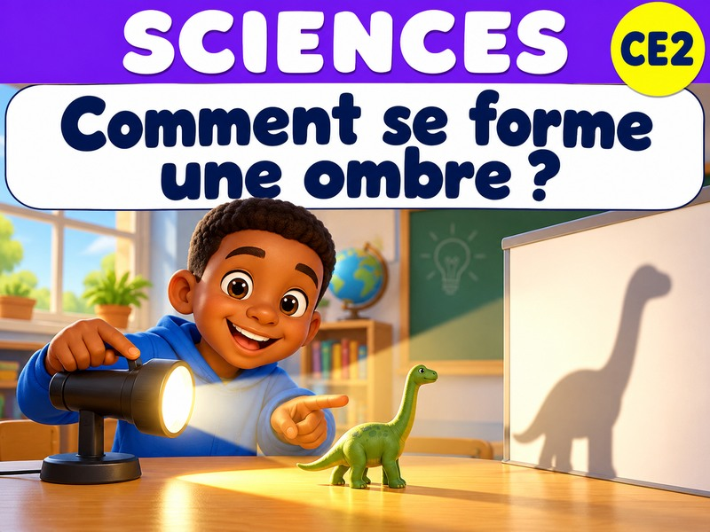
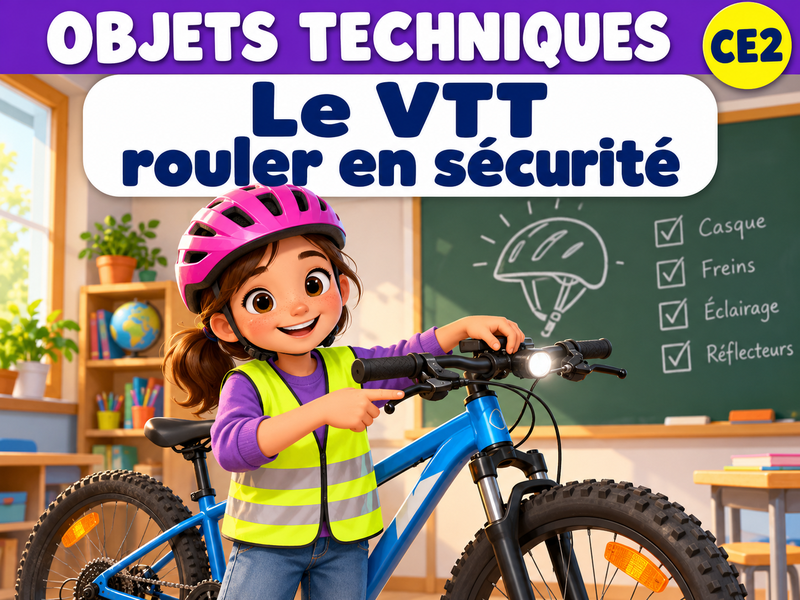

La démarche scientifique
Sciences · MéthodeL’air existe et prend de la place
Matière · AirL’air peut être comprimé
Matière · AirL’eau et l’huile ne se mélangent pas
Matière · Eau et huileTransparent, translucide ou opaque ?
Matière · Matériaux
Comment se forme une ombre ?
Matière · OmbresComment fonctionne un VTT ?
Objets techniques · Transmission
Le VTT : rouler en sécurité
Objets techniques · SécuritéAucune leçon publiée dans cette sous-matière pour le moment.